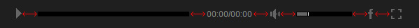

“Ultimate Video Player ” Documentation by FWDesign
“Ultimate Video Player”
Created: 20/05/2017 - Version
By:© FWD (FUTURE WEB DESIGN)
Email: tibi_diablo@yahoo.com
Thank you for purchasing our script. If you have any questions that are beyond the scope of this help file, please feel free to email via our email. Thanks so much!
Table of Contents
- Important notes read this before anything else.
- Embed Ultimate Video Player into your html page.
- Install Ultimate Video Player in fullscreen and popup.
- Constructor parameters.
- Setup playlists.
- Setup video, ads (pre-roll / mid-roll / post-roll), subtitles and poster source.
- Setup pop-up commercial ads.
- API.
- Setup annotations.
- Sources and Credits
A) Important notes make sure you read this! - top
Please note that the Ultimate Video Player installation and configuration is not complicated but because it has a lot of customizable settings it might seem complicated, please go through the entire documentation before trying to install it into your own page. Basically what it must be done is to copy some html code from the examples we provided and paste it into your own html page and of course add your own video file.
Please note that Vimeo is disabled by default because it dosen't work when tested local, so if you need vimeo please make sure that you test online and set useVimeo:true in the video constructor
Ultimate Video Player only requires the mp4 video format and it will work in all browsers on a desktop machine or on a mobile device, this is extremely important because there is no need to create multiple video formats for browsers that dose not support mp4, also please note that the mp4 video format is recommended and used by all major browsers distributors like Google, Microsoft, Apple, Mozzila etc.!
Vimeo videos are disabeld by default because they are not working local, the Vimeo API dosen't work local so it has to be disable in order to setup the player and test local, to enable it set useVimeo:"yes"
On IE8, Safari under WIndows, or Firefox under MAC the flash player is used because this browsers doesn't support mp4 videos, if your videos doesn't start until they are fully loaded then they are encoded with the metadata at the end, this can be easily fixed by using this tool
The server is character case sensitive so make sure that the Ultimate Video Player settings are identical to those from the provided examples.
When using mp4 video files located on your server with relative paths you must add all folders that contains mp4's videos in the content folder, this is extremely important in order for all features to work correctly.
Some of the features will not work local like the share button or playing youtube videos on some browsers like IE and Opera, this is normal behavior because most browser does not allow this, once uploaded on the server it will function properly.
When something is wrong with a Ultimate Video Player action a red info box with the problem description will appear over the Ultimate Video Player, please note that this box is there to help you understand the problem, for example if a mp4 video file is not found the box will appear and inform you about the problem. The box can be closed when clicked or touched.
The Ultimate Video Player skin is constructed from .png images, only a few settings for changing colors are possible like changing the time color, thumbnails text color etc. If you want a different skin the .png files must be modified. We have a great designer in our team so if you need a custom skin please contact us!
B) Embed Ultimate Video Player into your html page. - top
This is a small tutorial about how to embed the UVP into your page. R can be e embedded into a html page inside a div of your choosing, it will adapt it's width and height based on the maxWidth and maxHeight properties specified in the constructor, if the page is resized and the parent div width is smaller then the maxWidth property the UVP will adapt its size accordingly.
In the download files there is a start folder and in this folder there are html files starting with the label "responsive", each of this examples have exactly the same structure with different constructor settings. You can use one of them to copy and paste the required html code based on skin that you need, I will use the responsive-skin-minimal-dark.html as an example for this tutorial.
The skin is created using javascript and .png images, if you want a custom skin please contact us. If you want to create a skin of your own modify the ones we already provided.
- Copy and paste the content folder and the java folder into the same folder with your .html file, inside the content folder there are other folders which are self explanatory. Keep only the skin folder that you need to save space on the server.
- Open responsive-skin-minimal-dark.html with a text editor.
- The javascript and CSS files must be imported, in the head section of your html file add the below code.
This is how the player is installed in a HTML page, please read the Constructor parameters section to understand the Ultimate Video Player properties
C) Install Ultimate Video Player in fullscreen and popup and popup. - top
To install the UVP player in fullscreen the exact same steps as in the Embed Ultimate Video Player into your html page must be followed, the only difference is that the displayType property must be set to fullscreen as follows : displayType:"fullscreen". Inside the start folder there are html files examples for each skins, this examples are starting with the label "fullscreen".
To popup the UVP there is a POPUP-example.html example includded in the start file. Please check out the source to see how this is accomplished.
D) Constructor parameters. - top
Please open any of the .html files provided with a text editor as reference.
These parameters represents the possible setting for the Ultimate Video Player they are all visible below.
//-- main settings --//
- useYoutube:"yes" - this can be yes or no. If you don't use youtube videos always set this to no, it will improve the overall performance and loading time.
- useVimeo:"yes" - this can be yes or no. If you don't use vimeo videos always set this to no, it will improve the overall performance and loading time.
- instanceName:"player1" - The player instance name, trough this instance the API is called for example if the instance name is "player1" and if you want to call play() method it is called like this player1.play();.
- parentId:"myDiv" - The id of the div into which the UVP is added, this id must be unique.
- playlistsId:"playlists" - The id of the ul html element that represents the playlists, for more info please read Setup playlists.
- mainFolderPath:"content" - The main folder path. This folder contains some important files like the php files and the mp4 video files, in this folder you need to add your mp4 video folders or mp4 video files.
- skinPath:"content/minimal_skin_dark" - The skin path, the folder that contains the skin graphics.
- displayType:"responsive" - This can be responsive or fullscreen, if you want to embed the player in your page inside the div then set this to responsive, if you want the player to always fill the browser window width and height set it to fullscreen.
- fillEntireVideoScreen:"no" - this can be yes or no, if is set to yes the video will fill the entire available space removing any horizontal or vertical gaps based on the video size, if is left to no it will resize the video normally example here.
- useHEXColorsForSkin:"no" - this can be yes or no, if this is set to yes the player skin colors can be modified with hexadecimal colors, a skin normal and selected state can be set, please note that there are two special skins that we created for this feature that works perfectly, they can be found in the hex_white and hex_dark folder under the content folder so please use this skins if you are planning to use this feature,itwill work with the other skins also but it is possible that the colors will not be exactlly how you want because of the way the Math behind this works, as a note the white color on the skin will be filled 100% with the hex colors, the dark collor will be filed 0% with the hex color and everything in between will be aproximated as best as possible, this sounds more complicated then it actually is :) example here.
- normalHEXButtonsColor:"#FF0000" - The hexadecimal color for the skin normal state.
- selectedHEXButtonsColor:"#000000" - The hexadecimal color for the skin selected state.
- useDeepLinking:"yes" - this can be yes or no. Allow or not deeplinking, if deeplinking is disabled the facebook share button will share the current page url.
- rightClickContextMenu:"default" - this can be developer, default or disabled. We would appreciate it if you can leave this feature set to developer.
- addKeyboardSupport:"yes" - this can be yes or no. Enable or disable the keyboard space bar to pause or play the video.
- autoPlay:"no" - this can be yes or no.
- loop:"no" - this can be yes or no.
- shuffle:"no" - this can be yes or no.
- autoScale:"yes" - this can be yes or no.If set to yes the UVP height will always be proportional to the UVP width, if set to no the height will be fixed based on the maxHeight property.
- showButtonsToolTip:"yes" - this can be yes or no, enable or disable the control bar button tooltips.
- stopVideoWhenPlayComplete:"yes" - this can be yes or no, if this is enabled when the video playback is complete the video will stop and the poster if any is showed.
- buttonsToolTipHideDelay:1.5 - delay in seconds until the button tooltip appears when the button is hovered.
- maxWidth:750 - a number that represents the player maximum width in pixels, think of this property as it would be the max-width css property (only applies if the displayType is responsive).
- maxHeight:750 - a number that represents the player maximum height in pixels, think of this property as it would be the max-height css property (only applies if the displayType is responsive).
- volume:.8 - A number from 0.1 to 1 that represents the volume level.
- backgroundColor:"#000000" - the main background color.
- videoBackgroundColor:"#000000" - the video background color, this doesn't apply to the youtube player.
- posterBackgroundColor:"#000000" - The video poster background color, if you want a transparent background set this to transparent.
- buttonsToolTipFontColor:"#000000" - The buttons tooltip color.
- showLogo:"yes" - This can be yes or no, hides or show the logo.
- hideLogoWithController:"yes" - This can be yes or no. If is set to yes the logo will hide when the controller hides otherwise it will always be visible over the video.
- logoPosition:"topRight" - This can be topRight, topLeft, bottomRight, bottomLeft, used to position the logo in one of the video corners.
- logoLink:"http://www.yourlink.com" - The page link that will open when the logo is clicked, the none value will disable this feature.
- logoMargins:"20" - Margins in px to push the logo from the video corners.
- showPlaylistsButtonAndPlaylists:"yes" - this can be yes or no, disable or enable the playlists button and playlists window.
- showPlaylistsByDefault:"yes" - this can be yes or no, if this is set to yes the playlists window is showed as soon as the Ultimate Video Player is loaded and displayed.
- thumbnailSelectedType:"opacity" - this can be threshold, opacity or blackAndWhite, it represents the playlist thumbnail selected state (please note that this setting is always opacity when tested local or on a mobile device).
- startAtPlaylist:0 - a number that represents the playlist that will be loaded when the UVP loads the first time, if deeplinking is used and the browser url has a playlist link this option is ignored. The playlists count starts from 0 (zero).
- buttonsMargins:0 - Margins for the next, previous and close buttons.
- thumbnailMaxWidth:330 - a number that represents the thumbnail maximum width, the width of the thumbnail will vary based on the available space but it will never be higher then this option.
- thumbnailMaxHeight:330 - a number that represents the thumbnail maximum width in pixels, the height of the thumbnail will vary based on the available space but it will never be higher then this option.
- horizontalSpaceBetweenThumbnails:40 - a number that represents the horizontal space in pixels between thumbnails.
- verticalSpaceBetweenThumbnails:40 - a number that represents the vertical space in pixels between thumbnails.
- showPlayListButtonAndPlaylist:"yes" - this can be yes or no. Disable or enable (hide or show) the playlist button and playlist.
- playlistPosition:"bottom" - this can be bottom or right.
- showPlayListByDefault:"yes" - this can be yes or no, if this is set to yes the playlist is showed as soon as the UVP is loaded and displayed otherwise the playlist is hidden and it will only appear if the playlist button is clicked or touched.
- showPlaylistName:"yes" - this can be yes or no. Disable or enable the playlist name.
- showSearchInput:"yes" - this can be yes or no. Disable or enable the search input.
- showLoopButton:"yes" - this can be yes or no. Hide or show the loop button.
- showShuffleButton:"yes" - this can be yes or no. Hide or show the shuffle button.
- showNextAndPrevButtons:"yes" - this can be yes or no. Hide or show the next and prev playlist buttons.
- forceDisableDownloadButtonForFolder:"yes" - this can be yes or no. Disable or enable the download button for a playlist that is loading videos from a folder.
- addMouseWheelSupport:"yes" - this can be yes or no.
- startAtRandomVideo:"yes" - this can be yes or no, if this is set to yes the playlist loads first time a random video will play.
- folderVideoLabel:"Video - " - this represents the start label for videos that are loaded from a folder, after this label the counting video number will be added by the script for example Video - 1, Video - 2 etc.
- playlistRightWidth:310 - The playlist width when it is positioned at the right.
- playlistBottomHeight:310 - The playlist height when it is positioned at the bottom.
- startAtVideo:"0" - a number that represents the video that will be loaded when the UVP loads the first time, if deeplinking is used and the browser url has a video link this option is ignored. The video count starts from 0 (zero).
- maxPlaylistItems:50 - this is useful if the number of playlist items must be limited, for example if a playlist is loaded from Youtube and it has 1000 videos it will be to large to display so the playlist will display only 50 videos, if you want to load the total available videos without limitation set this number to a large number like 10000.
- thumbnailWidth:70 - thumbnails width in pixels.
- thumbnailHeight:70 - thumbnails height in pixels.
- spaceBetweenControlerAndPlaylist:2 - space in pixels between the video control bar and playlist.
- spaceBetweenThumbnails:2 - vertical space in pixels between thumbnails.
- scrollbarOffestWidth:2 - the width to remove from the playlist total width to make room for the playlist scrollbar.
- scollbarSpeedSensitivity:.5 - a number from 0.1 to 1 that represents the scrollbar speed sensitivity.
- playlistBackgroundColor:"#000000" - the playlist background color.
- playlistNameColor:"#FFFFFF" - the playlist name color.
- thumbnailNormalBackgroundColor:"#1b1b1b" - the playlist thumbnail background normal color.
- thumbnailHoverBackgroundColor:"#1b1b1b" - the playlist thumbnail background hover color.
- thumbnailDisabledBackgroundColor:"#1b1b1b" - the playlist thumbnail background selected color.
- thumbnailDisabledBackgroundColor:"#272727" - the playlist thumbnail background selected color.
- searchInputBackgroundColor:"#000000" - the search input background color.
- searchInputColor:"#000000" - the search input color.
- youtubeAndFolderVideoTitleColor:"#FFFFFF" - the title color for videos loaded from youtube or a video folder.
- youtubeOwnerColor:"#FFFFFF" - the color for the youtube video owner.
- youtubeDescriptionColor:"#FFFFFF" - the color of the youtube video description, this will apply to the text from the info window when the i button is pressed.
- showControllerWhenVideoIsStopped:"yes" - this can be yes or no, if this is set to yes the control bar is showed when the video is stopped and the video poster is visible otherwise it the control bar is hidden until the video starts to play.
- showNextAndPrevButtonsInController:"yes" - this can be yes or no. Hide or show the next and prev video button in the control bar.
- showVolumeButton:"yes" - this can be yes or no. Hide or show the volume button.
- showTime:"yes" - this can be yes or no. Hide or show the video current and total time indicator.
- showYoutubeQualityButton:"yes" - this can be yes or no. Hide or show the youtube quality button (this only applies if the video is played from Youtube).
- showDownloadButton:"yes" - this can be yes or no. Globally hide or show the video download button.
- showShareButton:"yes" - this can be yes or no. Hide or show the share window button.
- disableVIdeoScrubber:"no" - this can be yes or no. Disable or enable the video scrubber.
- showEmbedButton:"yes" - this can be yes or no. Hide or show the embed button.
- showFullScreenButton:"yes" - this can be yes or no. Hide or show the fullscreen button.
- repeatBackground:"yes" - this can be yes or no. Repeat or not the control bar background.
- controllerHeight:70 - the controller height in pixels.
- controllerHideDelay:2 - a number that represents the seconds until the control bar is hiding after a period of inactivity.
- startSpaceBetweenButtons:10 - a number that represents the space between buttons in pixels, ilustrated below with the red arrows.
- spaceBetweenButtons:10 - a number that represents the space between buttons in pixels, ilustrated below with the red arrows. 
- scrubbersOffsetWidth:10 - a number that represents the total amount in pixels removed from the scrubber bars when they are at the end (change this number to understand it better, useful based on the skin type).
- mainScrubberOffestTop:14 - the amount in pixels to push the main scrubber up when the controller is hiding.
- timeOffsetLeftWidth:10 - a number that represents the an addition in px to the space between the time indicator left side and the scrubber.
- timeOffsetRightWidth:10 - a number that represents the an addition in px to the space between the time indicator right side and the neighbor button.
- timeOffsetRightWidth:10 - a number that represents the an addition in px to the space between the time indicator right side and the volume button or any other button that will follow the time indicator.
- timeOffsetTop:10 - a number that represents the an addition in px to time position on the y axis.
- volumeScrubberHeight:70 - the height of the volume scrubbar.
- timeColor:"#888888" - the video time indicator color.
- youtubeQualityButtonNormalColor:"#888888" - the youtube quality buttons text normal color.
- youtubeQualityButtonSelectedColor:"#FFFFFF" - the youtube quality buttons text selected / hover color.

- subtitlesOffLabel:"Subtitles off" - the off subtitle buttons button label.
- embedWindowCloseButtonMargins:0 - Margins for the next, previous and close buttons.
- borderColor:"#333333" - the border color of the main windows.
- mainLabelsColor:"#FFFFFF" - the color for the main labels.
- secondaryLabelsColor:"#a1a1a1" - the color for the secondary labels.
- shareAndEmbedTextColor:"#5a5a5a" - the color for the share and embed text.
- inputBackgroundColor:"#000000" - the background color for the input texts.
- inputColor:"#000000" - the color for the input texts.
 //ads
//ads
E) Setup playlists. - top
Open with a text editor one of the html files from the start folder.
Setting up the playlists window is simple, an ul tag must be added in the body tag, this ul tag must have an unique id that is passed as a value to the UVP constructor as follows playlistsId"unique-id", in the examples provided the id is "playlists" but it can be have any value as long as it is unique.
To add/remove a playlist an li tags must be added/removed inside the playlists ul tag, this is illustrated in the below code. The Ultimate Video Player supports unlimited playlists but at least one playlist is required!.
Theree are four playlist type as follow: HTML, YOUTUBE, XML and folder. Each of this type of playlists are explained in detail below, please note that this playlist can contain both mp4 and youtube video files this way a mixed playlist can be created.
HTML playlist.
To add/remove this type of playlist in the playlists add or remove the code illustrated below into the playlists ul tag.The data-source represents the id of the playlist ul element. The other attributes are self explanatory.
Title: My playlist 3
Type: MIXED
Description: Created using HTML elements, videos are loaded and played from the server or Youtube.
To construct this type of playlist add the code from the below image inside the body HTML element. The code sample is self explanatory. To add/remove videos add/remove li HTML elements with the data-thumb-source attribute. There is an optional parameter called data-scrub-at-time-at-first-play, this allows to scrub te video at a specified time the first time the video plays so for example to scrub the video at minute 01 at first play set this attribute to data-scrub-at-time-at-first-play="00:01:00", the format time is "hours:minutes:seconds". Please note that you can set multiple video sources by passing an object of videos like showed in the below example to the data-video-source you can also pass the video source directly without an object form like this data-video-source="content/videos2/fwd-480p.mp4"
YOUTUBE playlist.
To add/remove this type of playlist add or remove the code illustrated below into the playlists ul tag.The data-source represents the youtube playlist id. The other attributes are self explanatory.
When adding the youtube plauylist id data-source attribute a special string must be added before it, this string value is list=, so for example if youtube playlist id is 289858 the final string must look like this list=289858.
Title: My playlist 2
Type: YOUTUBE
Description: Created by loading a Youtube playlist, videos are loaded and played from Youtube.
XML playlist.
To add/remove this type of playlist in the playlists add or remove the code illustrated below into the playlists ul tag. The data-source represents the path of the XML file. Please note that the XML path must be absolute, ex: http://www.domain.com/xmlFile.xml. The other attributes are self explanatory. Please note that the XML file does not allow special characters like "&", if you need to use this type of character numeric characters are required, a useful table with all this special characters can be found at this url.
Title: My playlist 5
Type: XML
Description: Created using a XML file, videos are loaded and played from the server or Youtube.
FOLDER playlist.
To add/remove this type of playlist add or remove the code illustrated below into the playlists ul tag. The data-source represents path of the mp4's folder (please note that this type of playlist can only be loaded from the same domain on which the html page resides, also the folder path must be relative to the path of the "proxyFolder.php", what this means is that your mp4's folder must be in the same folder or subfolder with the "proxyFolder.php" file in the content folder). The other attributes are self explanatory. To add thumbnails create an image with the same name as the mp4 file and add -thumbnail after it like this myMp4Video-thumbnail, for example if the video is called myVideo.mp4 the thumbnail should be myVideo-thumbnail.jpg
When adding the folder path to the data-source attribute a special string must be added before it, this string value is folder=, so for example if the mp4's folder path is myFolder the final string must look like this folder=myFolder. For a folder with a mp4's subfolder ex: myFolder/myMp4Folder the final string must look like this folder=myFolder/myMp3Folder. Try not to use special characters in your video names, it is possible that the script will ignore them if they have heavy names with special characters or white spaces.
Title: My playlist 4
Type: FOLDER
Description: Created using a folder with mp4 files, videos are loaded and played from the server.
F) Setup video, ads (pre-roll / mid-roll / post-roll), subtitles and poster source. - top
The Ultimate Video Player can play mp4 videos from your server, a different server, from youtube or vimeo. If you are using relative source paths for your videos make sure that all of them are situated inside the content folder, this is really important in order for the player to function correctly,
If you are using a HTML or XML playlist to play a video from your server set the data-video-source attribute to point to the mp4 video path, relative or absolute paths can be used, also UVP can be set to play a source for desktop machines and a source for mobile devices, this is done by separating the sources with ",". Please note that the mobile source is optional if you want a single source for all situations set a single source. Don't leave any white spaces after the "," separators!. ( the same rules apply to the video poster source with once exception, if you don't need a poster set data-poster-source="none"). Also it is possible to add multiple sources for videos as ilustrated below and switch between them using the video quality selector.
VIDEO TITLE
Each video can contain a short description, the description can be formatted with CSS as you like.
VIDEO TITLE
Each video can contain a detailed description, the description can be formatted with CSS as you like. The description window and description button can be disabled individually for each video or globally for all videos.
For more information about this please follow this link
To add one or more advertisement (pre-roll/mid-roll/post-roll) video an ul element with the data attribute data-ads has to be added insied the video data li element, this iw better explained below. Please note that an advertisement video can be set to play a source for desktop machines and a source for mobile devices, this is done by separating the sources with ",". Please note that the mobile source is optional if you want a single source for all situations set a single source. The global ads settings are set in the constructor, for more information about this please read the constructor parameters in the ads subsection.
Inside the element with the data-ads attribute the ads are added in li elementes, you can add as many as you like by stacking them one after eachother. Each element contains the ads data as follows :
data-source - the ad source, it can be a mp4 video path, an image path or a youtube video url.
data-time-start - the ad start time when it will appear in hours:minutes:seconds format.
data-time-to-hold-ads - the ad time until the skip button will appear in hours:minutes:seconds format.
data-thumbnailSource - optional tumbnail source that will appear as a small preview in the skip button.
data-link - the link to open when the ad is clicked.
data-target - the link target (_blank or _self).
data-add-duration - this is optional if the ad is an image and it represents the time to hold the image ad in in hours:minutes:seconds format.
VIDEO TITLE
Each video can contain a short description, the description can be formatted with CSS as you like.
VIDEO TITLE
Each video can contain a detailed description, the description can be formatted with CSS as you like. The description window and description button can be disabled individually for each video or globally for all videos.
For more information about this please follow this link
To play a video from youtube set the videoSource property to point to the youtube video id, this is ilustrated below. Is important to note that a youtube video id is always constructed from 11 characters.
LORA PUISOR
Each video can contain a short description, the description can be formatted with CSS as you like.
LORA - PUISOR
Each video can contain a detailed description, the description can be formatted with CSS as you like. The description window and description button can be disabled individually for each video or globally for all videos.
For more information about this please follow this link
To play a video from vimeo set the videoSource property to point to the vimeo video url, this is ilustrated below.
THE CITY LIMITS
As of today, it is estimated that there are more than 7 billion humans living on Earth.
THE CITY LIMITS
Each video can contain a detailed description, the description can be formatted with CSS as you like. The description window and description button can be disabled individually for each video or globally for all videos.
For more information about this please follow this link
To add a subtitle set the data-subtitle-soruce tag for the video to point to the subtitle path or a subtitle object as ilustrated below, multiple subtitles cane be added and changed via the subtitle selector, if only one subtitle is added then the subtitle selector will be disabled. The subtitle format can be .txt. or .srt. The format is of .srt type, and there is included one subtitle for reference this way more can be created from a template. How to add a subtitle for a video is ilustrated below.
VIDEO TITLE
Each video can contain a short description, the description can be formatted with CSS as you like.
VIDEO TITLE
Each video can contain a detailed description, the description can be formatted with CSS as you like. The description window and description button can be disabled individually for each video or globally for all videos.
For more information about this please follow this link
G) Setup pop-up commercial ads. - top
To add pop-up ads window or windows can be added with ease, some HTML code has to be added inside the li element that contains the video, the example below will show better what I mean by that. Below you can see that there is a div with an attribute data-add-popup, that is what must be added and inside of it there are other parameters that are self explanatory, you can add one or as many as you like. Please note that only image format is supported as the popup source (.jpg, .jpeg, .png)
VIDEO TITLE
Each video can contain a short description, the description can be formatted with CSS as you like.
VIDEO TITLE
Each video can contain a detailed description, the description can be formatted with CSS as you like. The description window and description button can be disabled individually for each video or globally for all videos.
For more information about this please follow this link
H) API. - top
Inside the donwload files there is HTML file called API-example.html, in this file I have added all events and methods for reference, open the page source to see them. Full reference below. Please note that the properties are read only and they can only be written in the consturctor for more info about this please read the Constructor parameters section.
API - public methods:
| Function | Method | Description |
|---|---|---|
downloadVideo |
downloadVideo(pId:Number):String | Download video based on id. |
getVideoSource |
getVideoSource():String | Return the video source path if the video is from the server or youtube id if the video is playing from youtube. |
getPosterSource |
getPosterSource():String | Return the poster source. |
getCurrentTime |
getCurrentTime():String | Return the current time source. |
getTotalTime |
getTotalTime():String | Return the video total time / duration. |
goFullScreen |
goFullScreen():void | Set video player to fullscreen. |
play |
play():void | Start / play playback. |
playVideo |
playVideo(videoId):void | Play a video based on the videoId, the count is starting from 0. |
playNext |
playNext():void | Start / play next video. |
playPrev |
playPrev():void | Start / play previous video. |
playShuffle |
playShuffle():void | Start / play shuffle video. |
pause |
pause():void | Pause the playback. |
setVideoSource |
setVideoSource(videoSource:String):void | Set the video source path or youtube video id. Please read the Setup video, ads (pre-roll / mid-roll / post-roll), subtitles and poster source. |
setPosterSource |
setPosterSource(posterSource:String):void | Set the poster source path. Please read the Setup video, ads (pre-roll / mid-roll / post-roll), subtitles and poster source. |
share |
share():void | Share current track on facebook. |
setVolume |
setVolume( Number ):void | Set the video volume, this method accepts a parameter that represents a number between 0 (video mute state) and 1 (video maximum volume). |
scrub |
scrub( Number ):void | Notify instance to scrub (set the video position), this method accepts a parameter that represents a number between 0 (video start position) and 1 (video end position). |
scrubbAtTime |
scrubbAtTime(time:String):void | Notify instance to scrub at a specified time, the time argument has to be in hours:minutes:seconds format ex:00:01:20. |
stop |
stop():void | Stops the playback and the loading process if the loading process has started. |
showCategories |
showCategories():void | Show the categories windows. |
API - event listeners:
| Event | Prefix | Description |
|---|---|---|
error |
FWDUVPlayer.ERROR |
Dispatched when the Ultimate Video Player instance can't load or play the video file, this event has a property of type string that represents the error message. |
goFullScreen |
FWDUVPlayer.GO_FULLSCREEN |
Dispatched when the Ultimate Video Player is set to fullscreen. |
goNormalScreen |
FWDUVPlayer.GO_NORMALSCREEN |
Dispatched when the Ultimate Video Player is set to normalscreen. |
ready |
FWDUVPlayer.READY |
Dispatched when the Ultimate Video Player instance API is actually available. |
stop |
FWDUVPlayer.STOP |
Dispatched when the Ultimate Video Player instance is stopped. |
play |
FWDUVPlayer.PLAY |
Dispatched when the Ultimate Video Player instance playback start to play. |
pause |
FWDUVPlayer.PAUSE |
Dispatched when the Ultimate Video Player instance playback is paused. |
update |
FWDUVPlayer.UPDATE |
Dispatched when the Ultimate Video Player instance is playing and it's position is changing (useful to update a custom scrub bar), this event has a property of type number between 0 (video start position) and 1 (video end position). |
updateTime |
FWDUVPlayer.UPDATE_TIME |
Dispatched when the Ultimate Video Player instance current duration is changing. This event has two properties of type string curTime and totalTime. |
updateVideoSource |
FWDUVPlayer.UPDATE_VIDEO_SOURCE |
Dispatched when the Ultimate Video Player instance current video source is modified. |
updatePosterSource |
FWDUVPlayer.UPDATE_POSTER_SOURCE |
Dispatched when the Ultimate Video Player instance current poster source is modified. |
startToLoadPlaylist |
FWDUVPlayer.START_TO_LOAD_PLAYLIST |
Dispatched when the Ultimate Video Player playlist is starting to load. |
playListLoadComplete |
FWDUVPlayer.LOAD_PLAYLIST_COMPLETE |
Dispatched when the Ultimate Video Player playlist is loaded. |
playComplete |
FWDUVPlayer.PLAY_COMPLETE |
Dispatched when the Ultimate Video Player instance playback has reached the end of the video file. |
I) Setup annotations. - top
First of all to add annotations to a video an ul element with the structure presented below has to be added in the playlist li element that contains the video data in which you want the annotation(s). Inside it there are the annotations, you can add as many as you like by stacking them one after eachother. The li element that holds the annotation data has some attributes that consturct their logic:
data-start-time - the start time when the annotaton show in hours:minutes:seconds format.
data-end-time - the end time when the annotaton hide in hours:minutes:seconds format.
data-left - the left postion in px.
data-top - the top position in px.
data-normal-state-class - a css class that represents the annotation normal state.
data-selected-state-class - a css class that represents the annotation selected state, when the annotation is hovered this class will be applied, please note that this is optional if you don't want a selected state don't add this attribute
data-show-close-button - this can be yes or no, shows or hides the annotation close button.
data-click-source - this can contain a page URL or a javascript name ex:data-click-source="myJavascritpFunction();", this attribute is optional if you don't want to open a page or to call a javascript function on click don't add this attribute.
data-click-source-target - if you want to open a page this is this attribute holds the page target (_blank, _self).
-
Inactive annotation!
-
LINK support, href and target can be specified, also animation between annotation states is possible as you can see here on hover.
J) Sources and Credits - top
This component was made by Tibi from FWD (FWDesign) FUTURE WEB DESIGN, for more information and support contact us at tibi_diablo@yahoo.com
Once again, thank you so much for purchasing this item. As I said at the beginning, I'd be glad to help you if you have any questions regarding this Ultimate Video Player and I'll do my best to assist.
FWDesign